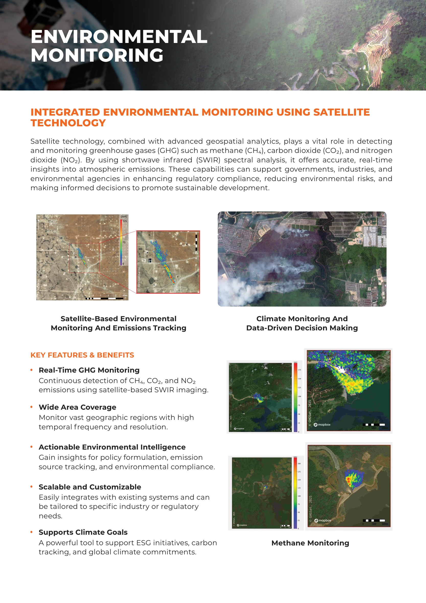
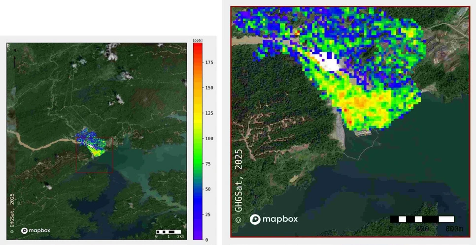
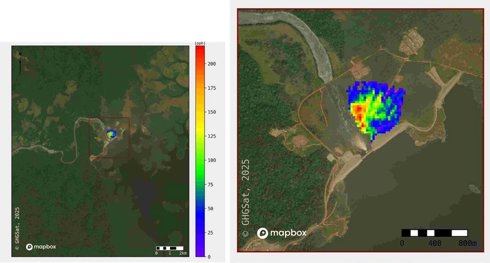
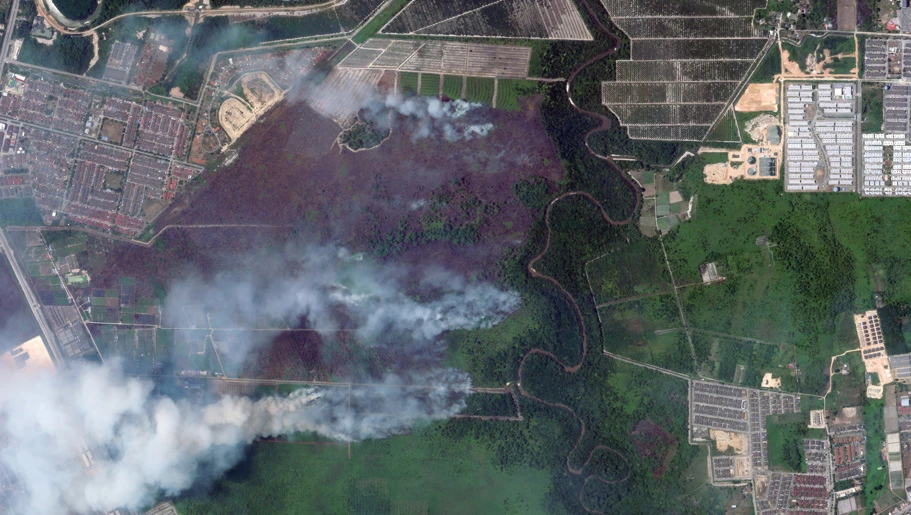
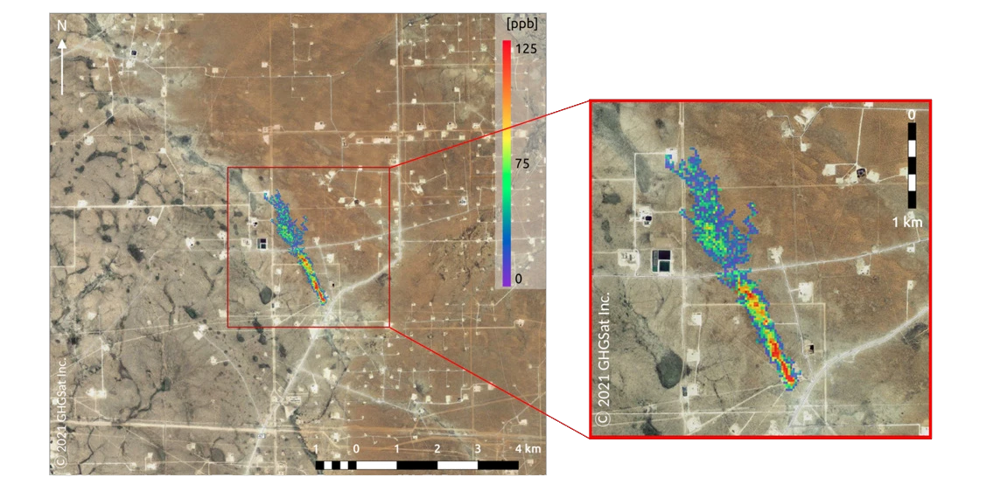
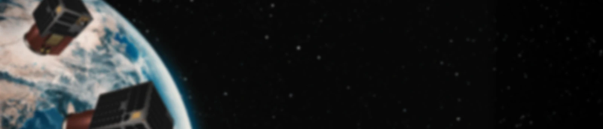
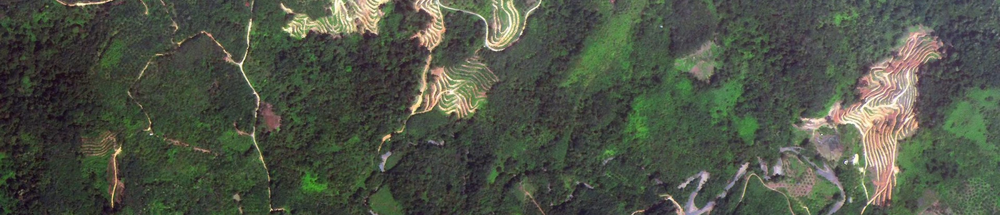

Integrated environmental monitoring using satellite technology.

Environmental intelligence
Satellite technology and geospatial analytics support detection and monitoring of methane (CH₄), carbon dioxide (CO₂) and nitrogen dioxide (NO₂). The brochure describes satellite-based shortwave infrared (SWIR) spectral analysis for atmospheric emissions, supporting governments, industry and environmental agencies.
Key features & benefits
- Real-time GHG monitoring: continuous detection of CH₄, CO₂ and NO₂ emissions using satellite-based SWIR imaging.
- Wide-area coverage: monitor large geographic regions with high temporal frequency and resolution.
- Actionable environmental intelligence: support policy formulation, emission-source tracking and environmental compliance.
- Scalable and customisable: integrate with existing systems and tailor to industry or regulatory requirements.
- Supports climate goals: ESG initiatives, carbon tracking and global climate commitments.
Illustrated applications
- Satellite-based environmental monitoring and emissions tracking.
- Climate monitoring and data-driven decision-making.
- Methane monitoring.
In pictures
{kind=link}

{kind=link}
{kind=link}

{kind=link}
{kind=link}

{kind=link}
{kind=link}

{kind=link}
{kind=link}

{kind=link}
{kind=link}

{kind=link}
Read the complete source transcript
ENVIRONMENTAL MONITORING
INTEGRATED ENVIRONMENTAL MONITORING USING SATELLITE TECHNOLOGY
Satellite technology, combined with advanced geospatial analytics, plays a vital role in detecting and monitoring greenhouse gases (GHG) such as methane (CH₄), carbon dioxide (CO₂), and nitrogen dioxide (NO₂). By using shortwave infrared (SWIR) spectral analysis, it offers accurate, real-time insights into atmospheric emissions. These capabilities can support governments, industries, and environmental agencies in enhancing regulatory compliance, reducing environmental risks, and making informed decisions to promote sustainable development.
KEY FEATURES & BENEFITS
Real-Time GHG Monitoring
Methane Monitoring
Climate Monitoring And Data-Driven Decision Making Satellite-Based Environmental Monitoring And Emissions Tracking
Wide Area Coverage
Actionable Environmental Intelligence
Scalable and Customizable
Supports Climate Goals
Continuous detection of CH₄, CO₂, and NO₂ emissions using satellite-based SWIR imaging.
Monitor vast geographic regions with high temporal frequency and resolution.
Gain insights for policy formulation, emission source tracking, and environmental compliance.
Easily integrates with existing systems and can be tailored to specific industry or regulatory needs.
A powerful tool to support ESG initiatives, carbon tracking, and global climate commitments.